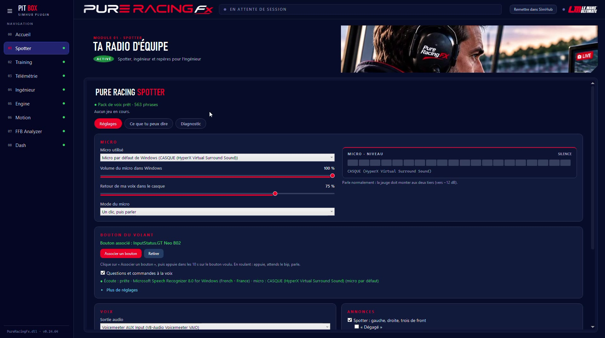
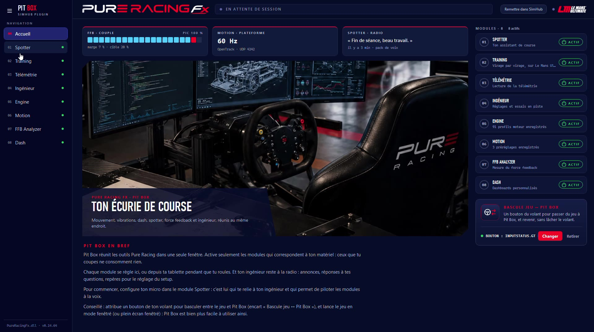

Un spotter et un ingénieur dans ton casque, en français. Il t'annonce les voitures autour de toi, les drapeaux, les stands et la météo, répond à tes questions et pilote Pit Box à la voix, sans que tu lâches le volant.
Tu choisis ce qu'il annonce, une case par sujet. Les alertes passent toujours en premier ; les informations attendent un moment calme.

Toutes les annonces se règlent dans le module : volume, voix, sujets.
Un appui sur le bouton du volant, et tu parles. Ton ingénieur te répond tout de suite, sans que tu quittes la piste des yeux.
« Carburant : 42 litres, environ 6 tours et demi. »Question : « carburant »
« Devant, à 1 seconde 2. »Question : « écart devant »
« Entrée des stands dans cent mètres. »Annonce : stands
Le Spotter est la pièce centrale de Pit Box : il relie ta voix à tous les modules.

L'accueil de Pit Box : chaque module s'active d'un clic, ou à la voix.
| Point | Ce qu'il faut savoir |
|---|---|
| Jeu | Le Mans Ultimate : le Spotter lit la position de toutes les voitures, les drapeaux et la météo en direct. |
| Micro | N'importe quel micro ou casque reconnu par Windows. La jauge du module montre s'il t'entend bien. |
| Bouton du volant | Un appui pour parler. Le même bouton peut aussi servir à la bascule jeu / Pit Box. |
| Voix | Une voix enregistrée pour les annonces courantes, et une voix de synthèse pour le reste. |
| Langue | Français, pour les annonces comme pour les questions. |
Tes tours comparés à une référence, virage par virage, avec un conseil à la radio.